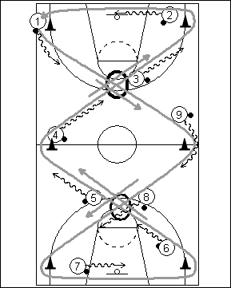

Catégorie : DRIBBLE (Dr-002)
Déroulement
- Tous les joueurs possèdent un ballon.
- Ils dribblent selon le parcours dessiné en gris sur le schéma et dans le sens des flèches grises.
- Ils alternent ainsi :
a) le dribble haut et rapide d’un cône à l’autre;
b) le dribble bas de protection lorsqu’ils contournent les cônes;
c) le changement de rythme dans le dribble (ralentir ou accélérer) lorsqu’ils doivent croiser un autre joueur dans les zones bleues cerclées noires.
Coaching points
- Toujours garder une certaine distance entre les différents joueurs.
- Soigner les dribbles bas de protection et les accélérations juste après.
- Insister sur la « split vision » pour éviter les contacts lors des croisements de joueurs.